Une p'tite couche de 12cm de laine de verre, et hop ?
Trouvez un accompagnementSujet très à la mode, et a priori tellement simple
…mais la rénovation thermique est bien plus complexe, si vous voulez faire une isolation pérenne et qualitative, en optimisant avec intelligence, les multiples critères financiers, techniques et liés au confort.
Identifier les travaux les plus pertinents (isolation, portes et fenêtres, chauffage...)
Améliorez le confort et la performance énergétique de votre bâtiment
Obtenir les aides financières auxquelles vous pouvez prétendre
Réaliser vos travaux avec des professionnels qualifiés et sélectionnés
La rénovation thermique ou énergétique est un ensemble de travaux visant à améliorer l'efficacité énergétique d'un bâtiment. L'objectif principal est de réduire la consommation d'énergie nécessaire pour chauffer, refroidir, éclairer et fournir de l'eau chaude sanitaire, tout en améliorant le confort des occupants.
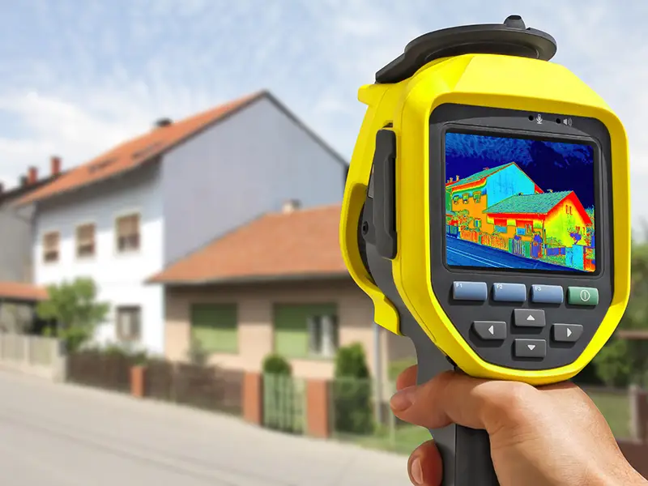
Améliorer l'isolation des murs, des toits, des sols et des fenêtres pour réduire les déperditions de chaleur en hiver et les gains de chaleur en été
Réduire les infiltrations d'air non contrôlées, afin d'améliorer l'efficacité énergétique globale du bâtiment.
Remplacer ou moderniser les systèmes de chauffage et de climatisation, afin qu'ils soient plus efficaces et moins énergivores. Cela peut inclure l'installation de pompes à chaleur, de chaudières à condensation ou de systèmes de chauffage solaire.
Installer ou améliorer le système de ventilation pour assurer un renouvellement d'air sain tout en minimisant les pertes de chaleur (VMC, ventilation double flux, etc.)
Des situations initiales toujours différentes, décuplée par les solutions techniques riches et multiples, font que les travaux d'isolation et de chauffage les plus appropriés pour vous, ne seront pas ceux, qui l'étaient pour votre voisin.
Une bonne isolation thermique, ainsi que des systèmes de chauffage ou de ventilation adaptés, varient en fonction de l'existant
Une isolation par l'intérieur ou une Isolation par l'Extérieur (ITE) ?
Une isolation thermique non cohérente (surdimensionnée par endroit et faible à d'autre) aura des résultats bien inférieurs à des travaux rationnels, pour un budget donné.
La Gestion de l'humidité (dans nos logements, nous produisons 14 l de vapeur d'eau, par jour et par personne)
Les bénéfices de l'isolation sont très dépendants de la qualité de pose, donc de l'artisan (continuité pour limiter les ponts thermiques)
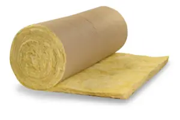
Laine de verre, Laine de roche, Perlite, Vermiculite…
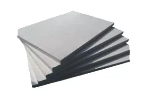
Polystyrène expansé, Polystyrène extrudé, Polyuréthane
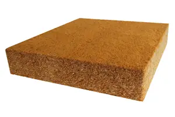
Dits Bio sourcés : Ouate de cellulose, Laine de bois, Liège, Laine de chanvre
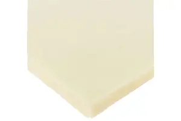
Aérogels, Panneaux isolants sous vide
Un seul sera le plus adapté à votre situation !
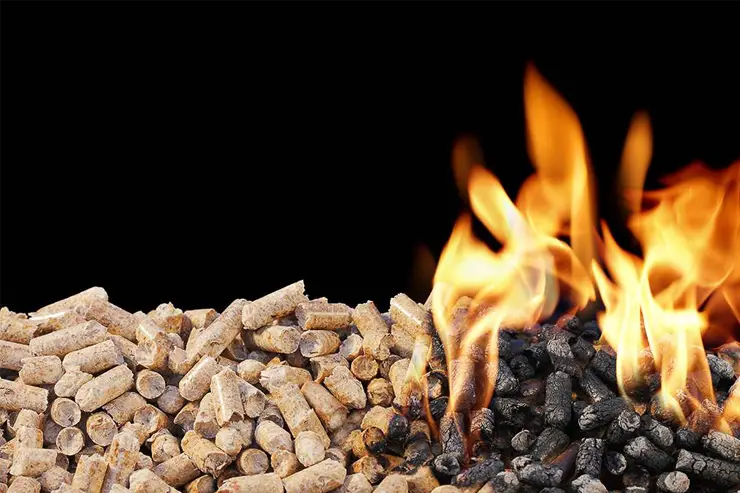
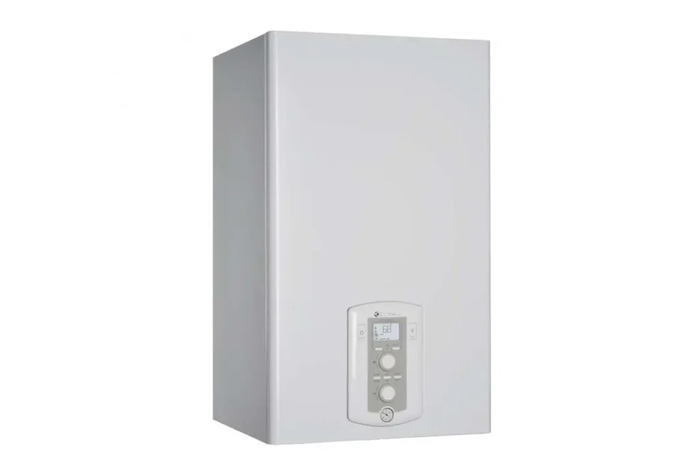
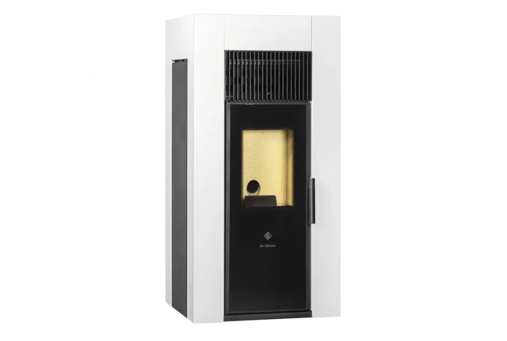
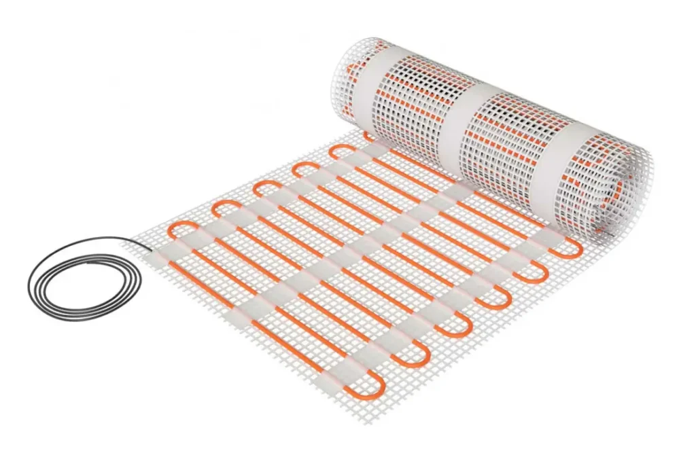
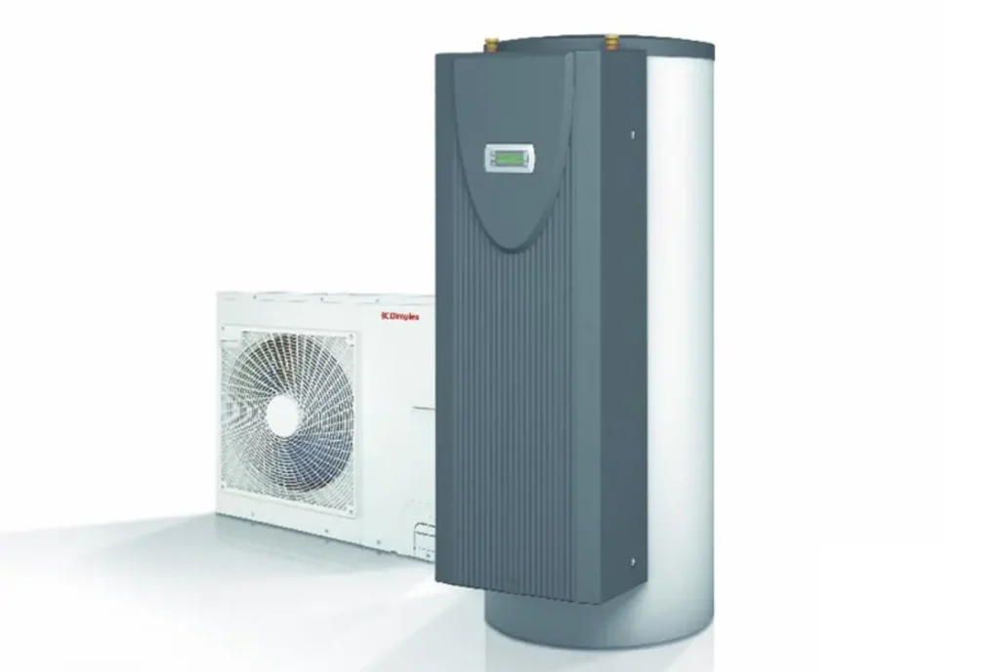
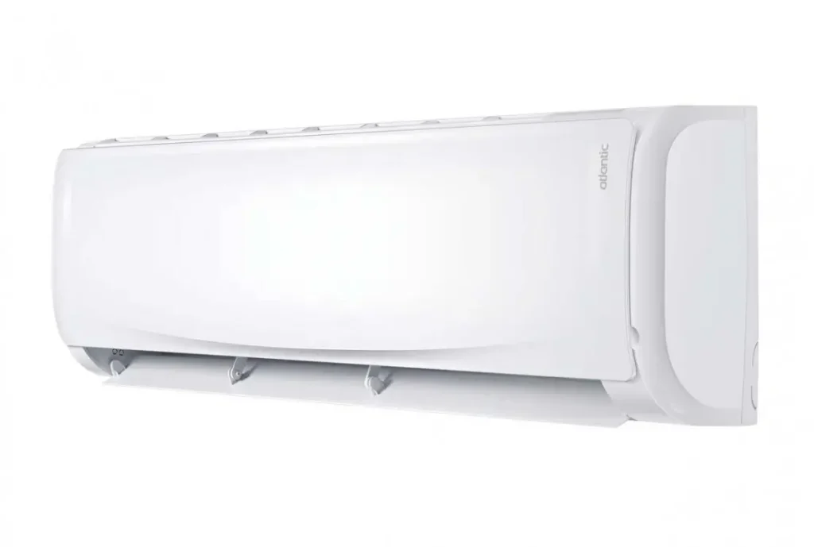
Là encore, une seule solution sera la meilleure, pour votre cas propre !
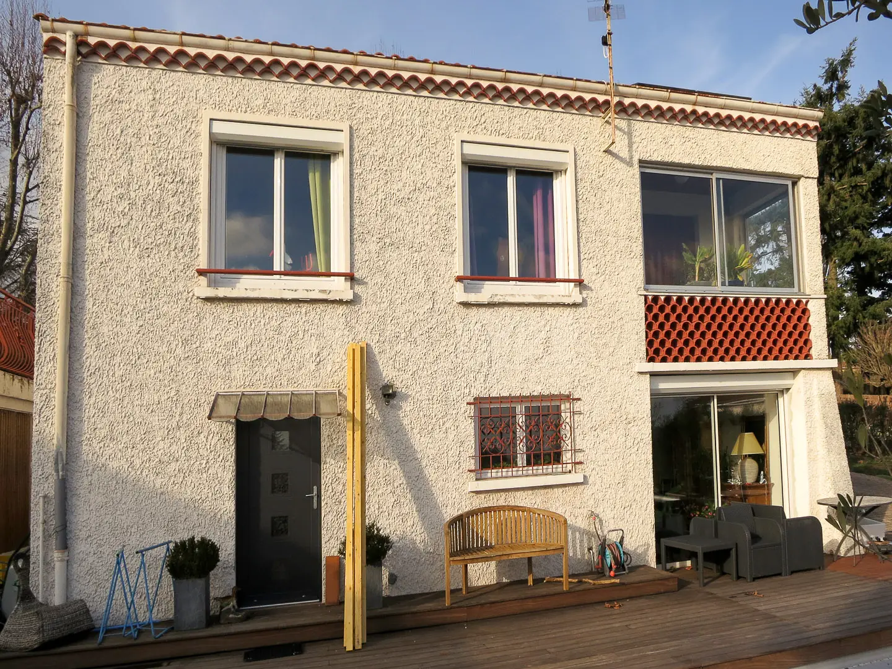
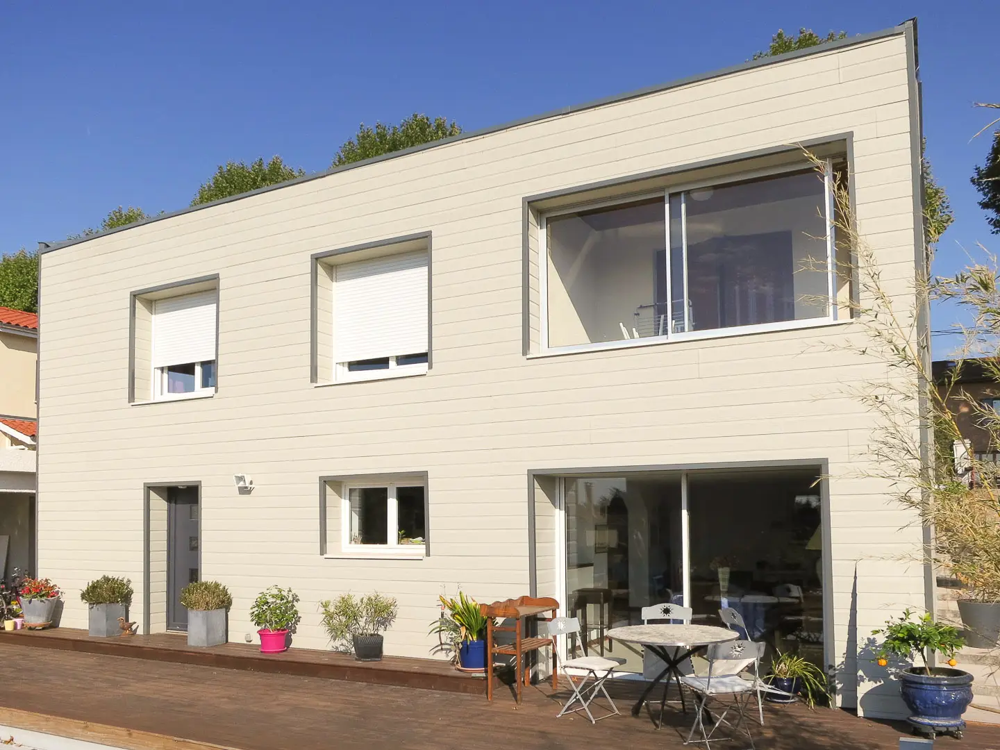
Qui'étude Travaux existe précisément pour vous aider à vous poser les bonnes questions, vous apporter des conseils personnalisés, tout vous expliquer de façon détaillée et, in fine, vous permettre de choisir en pleine connaissance
Nous serons également présents pour sélectionner des artisans de confiance, ou encore vous accompagner jusqu'au bout et suivre les travaux.
Demandez votre audit thermique